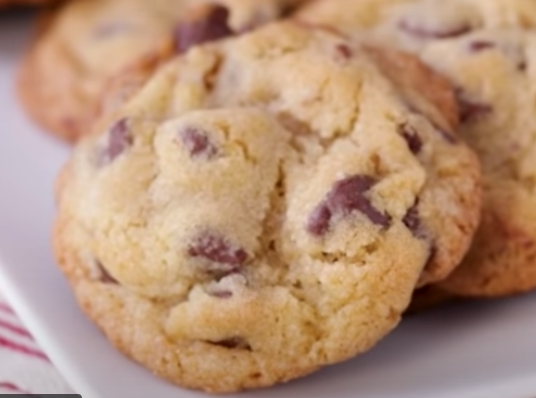
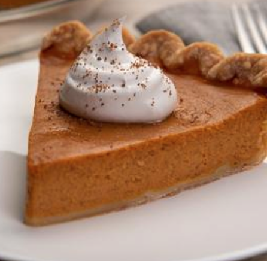

Above cupcakes
Hi! I'm Medha. I love baking and trying out new recipes! Here are some of my favs:
Here are some of my favorite, most-baked cake recipes! I love these because they're so easy to make and have turned out really well for me!

Cookies and Ice Cream Cheesecake
Out of all the categories, cupcakes are probably my go-to ones! Below are my frequently baked and loved ones.
Cookies might just be one of the most-baked baked desserts in the world, which is why I love them so much!
Chocolate Chip Birthday Cookies
Chocolate Chip Cookies and Cream Ice Cream Sandwich
Pies come in all different colors, shapes, tastes, and sizes, so here are some good ones to try!
Individual Puff Pastry Apple Pies
Here is the miscellaneous section! It's basically just a few recipies that I couldn't really categorize.